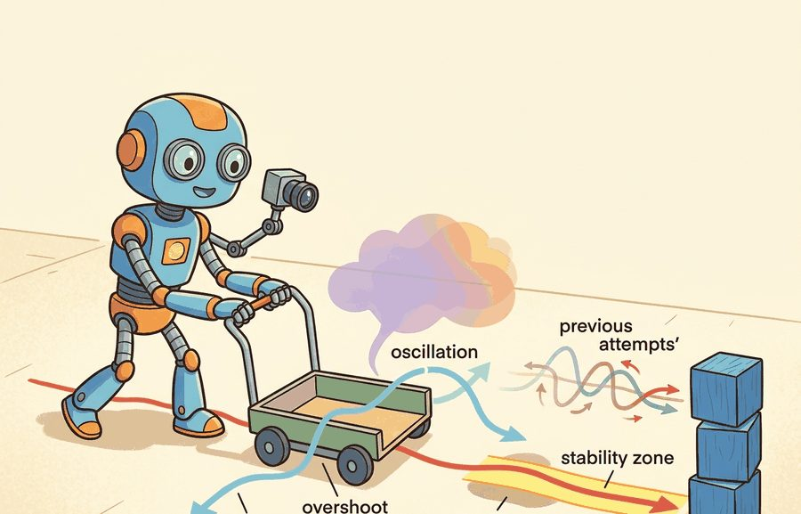
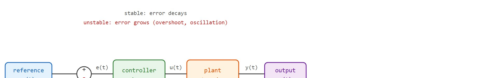
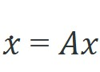
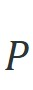
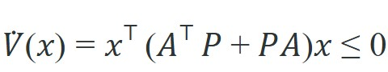
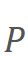
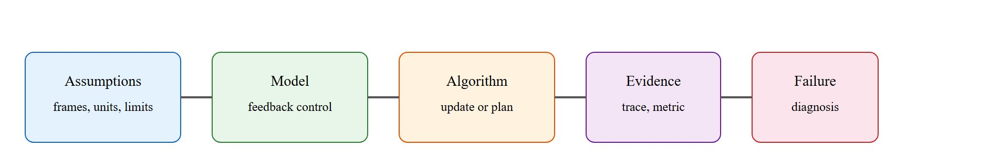

"Feedback is the thing that makes the system care about being wrong. It is also the thing that can make it care too much, too fast, and in the wrong direction."
A Control Theorist Watching an Actuator Shake

This section assumes familiarity with the open-loop versus closed-loop distinction from section 7.1 and with the rigid-body dynamics that generate the error signals from section 6.2. The stability vocabulary developed here (eigenvalues, Lyapunov certificates, overshoot, settling time) is extended directly in section 7.3, which shows how a PID controller is tuned to hit specific overshoot and settling-time targets. These same concepts recur throughout Part IV when learned policies must satisfy stability and safety constraints alongside task objectives.
A bipedal robot took one confident step, then toppled sideways as its corrective response arrived a fraction of a second too late and pushed in exactly the wrong direction. The fall was not caused by bad hardware or a flawed policy; it was caused by a feedback loop that had too much gain and too little damping. That scenario plays out in every embodied system, from drone altitude hold to robotic surgery arms, whenever a designer ignores the relationship between error signals, stability margins, overshoot, and oscillation. As of 2024-2025, learned policies are typically deployed on physical hardware without any formal stability guarantee, making these concepts urgent rather than academic. In this section you will build the vocabulary and the diagnostic tools to read a step-response curve, identify what is going wrong, and know which parameter to change first.
Watch a quadruped's ankle buzz at a steady frequency, or a drone's altitude jitter up and down by a few centimeters that never quite die out, and you are seeing the same culprit a control engineer sees in a step-response curve: a feedback loop fighting itself. A usable mental model turns that visible misbehavior into three moves: define the object of study, connect it to the agent loop, and test it with a compact implementation.
The key question in Feedback, error, stability, overshoot, oscillation is practical: what must the agent know, what can it observe, what action is available, and what evidence shows that the action worked under the stated conditions?
Stability margins matter only when they change a torque command on real hardware. When Unitree's Go2 quadruped lowers its derivative gain after an estimator detects ankle ringing, or when an ArduPilot multirotor backs off its rate-loop P term to stop a props-screaming oscillation in wind, the abstract eigenvalue has become a concrete number written to a motor driver. Keep asking which actuator command this stability analysis actually changes; if the answer is "none", the analysis is decoration.
A common assumption is that a simulation-stable feedback loop will stay stable on physical hardware because the model satisfied the mathematical conditions (negative eigenvalues, a positive-definite Lyapunov function). That reasoning fails in embodied AI. Real hardware adds sensor latency, actuator lag, and communication delay that the idealized plant omits. Those delays inject phase lag into the loop. A controller that ran well-damped at 100 Hz in simulation can oscillate or diverge on hardware once a 10-20 ms round-trip delay appears. Stability belongs to the full loop including all delays, not to the mathematical plant alone. Always measure and model the actual timing budget before trusting a simulation-derived gain.
Consider a drone holding an altitude of 2 m. The onboard controller reads the barometer, computes an error (say, the drone is at 1.8 m, so $e = 0.2$ m), and increases rotor thrust. If the gain is too low the drone climbs slowly and wind pushes it further down: the system is sluggish. If the gain is too high the drone overshoots to 2.4 m, the controller now commands a large downward correction, the drone drops to 1.6 m, and the cycle repeats: the system oscillates. The right gain produces a smooth, fast approach that settles at 2 m without ringing. To make this concrete: a proportional gain of 1.0 settles the drone in roughly 0.4 s with 5% overshoot; raising the gain to 10.0 produces 60% overshoot and the drone keeps ringing for over 8 s before settling. A 10x gain change turns a calm hover into a shaking chassis. Every concept in this section (error, stability, overshoot, oscillation, settling time) names one specific way this balance can go right or wrong. Figure 7.2A shows these outcomes side by side as step-response curves for underdamped, critically damped, and overdamped systems, with rise time, overshoot, and settling time marked on each.
Before you can change any of those gains intelligently, you need to see the signals that the gain acts on, which is why the first practical move is to expose the interface rather than to tune.
For Feedback, error, stability, overshoot, oscillation, the practical design rule is to make the interface inspectable before optimization begins: inputs, outputs, units, latency, bounds, and failure labels should all be visible in the saved artifact.
Feedback begins with an error signal, $e_t=r_t-y_t$, where $r_t$ is the reference and $y_t$ is the measured output. Stability asks whether a small disturbance stays bounded or shrinks; overshoot asks how far the response passes the target; oscillation asks whether correction arrives with the wrong phase or too much gain. For an AI practitioner, these are not abstract labels. They are log columns in a step-response test. A controller with no error signal is not controlling anything: it is issuing commands into silence and hoping, the defining trait of open-loop control. Figure 7.2B traces how these quantities connect: the sensor feeds the measured output back to the summing junction, where it is subtracted from the reference to form the error that drives the controller.

The error signal matters in embodied AI because physical actuators cannot act on intent, only on numbers. A robot arm with no error signal has no information about whether its last command moved the end-effector toward or away from the target. Without that signed difference, every joint position command is open-loop: drift, gravity, and friction accumulate unchecked, and the arm wanders. In safety-critical settings such as surgical robots or legged locomotion over uneven terrain, even a 5 mm uncorrected positional error can cause tissue damage or a fall.
Mechanically, the error signal closes the loop by feeding back into the controller at every timestep. The controller multiplies $e_t$ by one or more gains and sends the resulting torque or velocity command to the actuator. The plant responds, the sensor reads the new $y_{t+1}$, and the controller computes a fresh error. This cycle repeats at the control rate (typically 100 Hz to 1 kHz on real hardware). To feel the stakes: for a typical mid-size robot arm, running at 100 Hz with no feedback accumulates roughly 2-3 cm of positional drift per second from gravity and joint friction alone; close the loop and that same arm can hold within 0.1 mm indefinitely, an illustrative 200-300x improvement from one subtraction (the exact ratio depends on the arm's mass, friction, and the tolerance band used to define "holding"). Every downstream property, stability, overshoot, oscillation, depends on how large and how quickly $e_t$ changes across those cycles.
Before reading the table below, make a quick prediction: if you double the proportional gain on a system that is already showing 10% overshoot, does the settling time get shorter, longer, or does the system become unstable? Hold your answer, then check it against the step-response metrics that follow.
| Metric | What To Measure | What It Usually Means |
|---|---|---|
| Rise time | Time to move from near the start toward the target. | Low gain, heavy damping, or actuator limits can make the response slow. |
| Overshoot | Maximum amount past the target, often $(y_{\max}-r)/r$. | Feedback is aggressive relative to damping, delay, or mass. |
| Settling time | Time until the response remains inside a chosen tolerance band. | Residual oscillation, sensor noise, or weak damping keeps the loop busy. |
| Steady-state error | Final gap between target and measured output. | Bias, friction, gravity, or missing integral action is still present. |
Reading this table in order gives the "which parameter to change first" rule promised at the start of this section: a slow rise time with no overshoot points to raising proportional gain; overshoot with ringing points to raising derivative gain or damping before touching proportional gain; a persistent steady-state error with a clean, non-oscillating response points to adding or increasing integral action; and an oscillation that will not settle at any gain points away from the gains entirely and toward delay, sample rate, or sensor noise as the root cause.
When your step-response log shows a large, slow overshoot followed by sluggish recovery, suspect integral windup before touching proportional or derivative gains. In python-control, simulate windup explicitly by clamping the integrator state to your actuator limits using ct.input_output_response with a saturating feedback path; if the unsaturated and saturated simulations diverge, windup is your problem. The fix is anti-windup clamping: stop accumulating integral error whenever the actuator output is pegged at its limit. ROS 2 control's pid controller exposes this via the antiwindup parameter, which defaults to false and must be set explicitly in your YAML config.
The mechanism in Feedback, error, stability, overshoot, oscillation is the contract between representation and action. Name what enters the module, what leaves it, which assumptions make that transformation valid, and which log would reveal a bad handoff.
Stability of a linear system is decidable by inspection of one matrix. For

, the equilibrium is asymptotically stable exactly when every eigenvalue of has a strictly negative real part; engineers call this the left-half-plane condition, and it is the single most useful stability test in practice. The Lyapunov view gives the same answer through an energy-like function: if there is a positive-definite
with
, the system is stable. Code Fragment 7.2.1 takes a pendulum linearized near upright (an unstable plant), closes a PD (Proportional-Derivative) loop around it, and verifies stability both ways. The full PID controller that builds on this PD core is tuned against exactly these overshoot and settling-time targets in the next section.A Lyapunov function works like the water level in a bathtub with an open drain. You do not need to track every swirl and eddy in the water to know the tub will empty; you only need to confirm the level is falling. The Lyapunov function V(x) plays the role of the water level, and the condition that its time derivative is negative simply says the level is always dropping. If you can find any such "water-level" quantity that decreases everywhere the system can be, you have proved stability without solving a single trajectory.
So far: stability of a linear system reduces to one check on the eigenvalues of $A$ (the left-half-plane condition), the Lyapunov function gives an equivalent energy-based certificate that also works when eigenvalues are not defined, and Code Fragment 7.2.1 below applies both checks to a concrete pendulum example.
import numpy as np
from scipy.linalg import solve_lyapunov
def classify(A):
ev = np.linalg.eigvals(A)
mx = np.max(ev.real)
tag = "stable" if mx < 0 else ("marginal" if np.isclose(mx, 0) else "UNSTABLE")
return ev, mx, tag
# Pendulum near upright: gravity term gives a positive eigenvalue -> it falls.
A_open = np.array([[0.0, 1.0],
[16.0, -0.2]])
# Proportional-derivative feedback u = -[k1 k2] x folded into the dynamics.
k1, k2 = 30.0, 8.0
A_cl = np.array([[0.0, 1.0],
[16.0 - k1, -0.2 - k2]])
for name, A in [("open-loop", A_open), ("PD closed-loop", A_cl)]:
ev, mx, tag = classify(A)
print(f"{name:>15}: eig = {np.round(ev, 3)} max Re = {mx:+.3f} -> {tag}")
# Lyapunov certificate for the stable loop: solve A^T P + P A = -Q, P must be PD.
Q = np.eye(2)
P = solve_lyapunov(A_cl.T, -Q)
print(f"Lyapunov P eigenvalues = {np.round(np.linalg.eigvalsh(P), 3)} (all > 0 proves stability)")
, an independent certificate of the same conclusion. The eigenvalue test answers stability directly; the Lyapunov function generalizes to nonlinear systems where eigenvalues are not defined.Trace one proportional controller, $u_t = K_p\, e_t$, on the 2 m altitude-hold drone with $K_p = 2.0$ and a tiny plant model $y_{t+1} = y_t + 0.5\,u_t$ (each unit of command moves the drone half a meter). Start at $y_0 = 1.0$ m, reference $r = 2.0$ m. Step 0: $e_0 = 2.0 - 1.0 = 1.0$, so $u_0 = 2.0 \times 1.0 = 2.0$, and $y_1 = 1.0 + 0.5\times 2.0 = 2.0$. Step 1: $e_1 = 2.0 - 2.0 = 0.0$, so $u_1 = 0$ and $y_2 = 2.0$: the drone parks exactly on target. Now repeat with an aggressive $K_p = 3.0$. Step 0: $e_0 = 1.0$, $u_0 = 3.0$, $y_1 = 1.0 + 1.5 = 2.5$ (it overshot by 0.5 m). Step 1: $e_1 = 2.0 - 2.5 = -0.5$, $u_1 = -1.5$, $y_2 = 2.5 - 0.75 = 1.75$ (now it undershoots). Step 2: $e_2 = +0.25$, $y_3 = 1.75 + 0.375 = 2.125$. The error sequence $1.0, -0.5, +0.25, -0.125, \dots$ alternates sign and halves each step: a decaying oscillation. Push to $K_p = 4.0$ and that same arithmetic gives errors $1.0, -1.0, +1.0, \dots$ that never shrink: sustained oscillation, the boundary of instability. Same loop, three gains, three regimes, all from one subtraction and one multiply per step.
The fragment should expose gain, pole location, settling time, overshoot, and oscillation. python-control makes the analysis repeatable, while logged step responses show whether the robot is stable in hardware. Having the eigenvalue test and the logged response in hand sets up the step-by-step recipe that follows, which turns those checks into a repeatable workflow.
The common mistake in Feedback, error, stability, overshoot, oscillation is to celebrate the component score before checking the closed-loop handoff. The failure usually appears at the boundary: stale state, wrong frame, delayed action, saturated actuator, or metric that ignores the real task cost.
A team deploying a learned pick-and-place policy on a Franka Panda arm should log not only final grasp success, but the full Cartesian error trace at 1 kHz, the joint-torque saturation events, and the impedance controller recovery time after contact. On a Panda running libfranka at 1 kHz, a policy that commands 50 Hz Cartesian waypoints creates a 20 ms control gap per cycle; if the stiffness gain $K_p$ is above roughly 2000 N/m, that gap is typically enough for the inner impedance loop to accumulate 15-25% overshoot in the $z$-axis on hard-surface contact, which can trip the external-torque safety threshold and trigger an emergency stop. Logging controller status (torque headroom, integral windup, recovery flag) at each timestep distinguishes a policy failure from a controller tuning failure, which the final grasp-success rate alone cannot reveal.
The Falcon 9 first stage lands itself on a drone ship using a feedback loop whose dominant challenge is exactly overshoot versus oscillation: gimbaling the engines too hard cancels the descent error fast but rings into a lateral wobble the legs cannot absorb, while too little gain lets the booster drift off the pad. SpaceX's guidance solves a constrained optimization (convex powered-descent guidance, an optimization formulation shaped so it is guaranteed to solve quickly enough for a real-time landing) at roughly 10 Hz that trades settling time against actuator limits in real time. A controller that overshoots the final meter by even a fraction is the difference between a reusable booster and a fireball.
Treat feedback, error, stability, overshoot, oscillation like a control-room label. If the label does not tell a future debugger what moved, what sensed, or what failed, it is decoration rather than engineering knowledge.
1. Neural Lyapunov and stability-certified learning (2024-2026). A growing line of work trains neural networks to simultaneously output a control policy and a Lyapunov certificate that guarantees the closed-loop is stable by construction, replacing the classical hand-crafted energy function. The MIT CSAIL group's Neural CLF-CBF work (2024) and the Stanford Autonomous Systems Lab's "LACS" framework (Dawson et al., 2023-2024) demonstrate this on underactuated robots, while follow-on papers at CoRL 2024 extend the approach to contact-rich manipulation where the Lyapunov condition must hold across discrete contact modes.
2. Delay-aware and real-time safe reinforcement learning for hardware deployment (2024-2025). Sim-to-real oscillation caused by unmodeled loop delays has prompted a new family of delay-robust policy training methods. ETH Zurich's Robotics Systems Lab (RSL) demonstrated that explicitly randomizing observation and action delays during Isaac Lab training produces locomotion policies that remain stable on ANYmal and Unitree robots at 50 Hz despite 20-40 ms round-trip latencies (Kumar et al., 2024). A parallel thread at UC Berkeley (Chen et al., 2025) frames delay compensation as a partially observed MDP and solves it with recurrent policies that outperform classical Smith predictors (a delay-compensation scheme that runs an internal model ahead of the real, lagged sensor feedback) on high-bandwidth torque control tasks.
3. Oscillation detection and adaptive damping from onboard sensing (2025-2026). Rather than pre-tuning gains offline, recent work teaches robots to detect incipient oscillation from proprioceptive signal statistics and adapt damping online. Google DeepMind's "AutoTune" experiments (2025) and concurrent work from Agility Robotics on Digit show that a lightweight spectral monitor on joint velocity residuals can trigger a safe gain reduction within 20 ms, preventing falls on surfaces not seen during training.
Open problem for PhD students. All three directions above assume the control rate is fixed. A tractable open problem is adaptive-rate control: given a battery-constrained robot with a heterogeneous compute budget, automatically choose when to run the inner feedback loop at 1 kHz versus 100 Hz so that stability margins are preserved without exceeding thermal or energy limits. Existing stability theory (Lyapunov, eigenvalue placement) does not cleanly compose with variable-rate samplers, and no benchmark yet exists to compare approaches on this axis.
Can you name the observation, state estimate, action, success metric, and most likely failure mode for Feedback, error, stability, overshoot, oscillation? If not, the system boundary is still too vague.
Feedback, error, stability, overshoot, oscillation sits inside the Part II robotics contract: geometry defines where things are, kinematics defines what motion is possible, dynamics defines what motion costs, control defines how errors are corrected, and sensing defines what the agent can know on time. These corrections ultimately serve the perception-action loop that gives embodied agents their defining character.
Translate feedback behavior into measurable overshoot, settling time, steady-state error, and oscillation. That translation serves practitioners and researchers alike: it gives the idea an intuitive role, a formal interface, a runnable check, and a reproducible failure mode.
For Feedback, error, stability, overshoot, oscillation, control closes the loop between estimated state and action. Keep reference, measured state, error signal, control law, actuator limits, and safety fallback separate in the evidence record.
| Tool or Library | What It Handles | Verification Check |
|---|---|---|
| python-control | analyzes linear systems, transfer functions, state-space models, and feedback loops | Verify units, sample time, poles, stability margin, and reference scaling. |
| CasADi | formulates optimization-based controllers with constraints and horizons | Verify constraints, warm start, solver status, and deadline behavior. |
| Drake | models dynamical systems, multibody plants, optimization, and controllers | Verify scalar type, plant finalization, frame convention, and solver status. |
| do-mpc | formulates optimization-based controllers with constraints and horizons | Verify constraints, warm start, solver status, and deadline behavior. |
| ROS 2 control | supports practical work on Feedback, error, stability, overshoot, oscillation | Verify the library output against the hand-built baseline on one small case. |
Use this recipe when turning Feedback, error, stability, overshoot, oscillation into code, a simulator experiment, or a robot diagnostic. The point is not to use every library. The point is to keep the hand-built baseline and the maintained-tool path comparable.
For Feedback, error, stability, overshoot, oscillation, compare methods only through one saved artifact that preserves the inputs, outputs, units, timestamps, latency budget, configuration, seed, metric definition, and failure labels relevant to this section. The comparison is meaningful only when the same script evaluates the same panel.
Extend the section exercise by adding one perturbation specific to Feedback, error, stability, overshoot, oscillation and one latency or uncertainty check. Save the result in the EvidenceRecord schema, then explain which library output you trust and why.
A learned policy can hide an unstable inner loop until the disturbance changes. Consider locomotion controllers trained in simulation: a policy trained on a flat-ground MuJoCo model, then deployed on Boston Dynamics Spot, often shows a sim-to-real gap as oscillation in the ankle or knee joints once contact forces exceed the training distribution. The reward climbed in simulation, yet a marginally stable joint resonance persisted the whole time. Check update rate, delay, saturation, integral windup, and fallback behavior before scaling training. For this section, first reproduce one tiny step response by hand, then rerun it through python-control, CasADi, Drake, do-mpc, or ROS 2 control. If the two disagree, inspect sample time, sign convention, measurement delay, and output units before changing the model.
Feedback, error, stability, overshoot, oscillation needs a topic-native core: variables, equations or system contracts, an algorithmic procedure, an expected output, and a failure diagnosis. Figure 7.2.T summarizes the chain this section must preserve when moving from a teaching example to a real embodied system.

Error is $e_t=r_t-y_t$. Overshoot for a positive step can be recorded as $M_p=(y_{\max}-r)/|r|$. A discrete loop is practically stable when bounded perturbations produce bounded, decaying deviations under the same sample time, actuator limits, and sensor delay used in deployment.
| Contract Field | What To Specify | Why It Matters |
|---|---|---|
| State and observation | Variables, units, timestamps, frames, and uncertainty. | Prevents a model score from being mistaken for robot capability. |
| Action interface | Command type, limits, update rate, and safety fallback. | Makes the learned or planned output executable. |
| Evidence artifact | Trace, metric, configuration, seed, and failure label. | Allows baseline and library path to be compared in one pass. |
| Tool path | python-control, CasADi, do-mpc, Drake, ROS 2 control, MuJoCo | Shows the practical library route after the mechanism is understood. |
For Feedback, error, stability, overshoot, oscillation, expected output is a trace where the relevant error decreases, overshoot stays within the design bound, and actuator commands remain within limits under the stated timing budget.
Feedback, error, stability, overshoot, oscillation should be stress-tested under delay, integral windup, actuator saturation, unmodeled friction, and reference-frame mismatch before the nominal trace is trusted.
Core references for Feedback, error, stability, overshoot, oscillation: Modern Robotics; Murray, Li, and Sastry; Siciliano et al.; LaValle; and official documentation for Drake, MuJoCo, Pinocchio, CasADi, python-control, GTSAM, ROS 2, and OpenCV as applicable.
Use these references to check notation, frame conventions, units, solver assumptions, and maintained-library behavior.
Feedback, error, stability, overshoot, oscillation is useful when it makes the perception-action loop more reliable, not when it merely adds a more impressive model name.
Design a method-matched experiment for Feedback, error, stability, overshoot, oscillation. Specify the environment, observations, actions, metric, one perturbation, and the library output you would compare against the hand-built baseline.
Goal. Build intuition for how proportional gain alone moves a second-order system through the underdamped, oscillating, and unstable regimes, and read overshoot and settling time directly off the curve.
Tools needed. Python with python-control, numpy, and matplotlib (pip install control matplotlib). No hardware required; budget 15 to 30 minutes.
Procedure. Define a simple second-order plant such as a mass-spring-damper transfer function P = ct.tf([1], [1, 0.4, 1]). Close a proportional loop with ct.feedback(Kp * P) and call ct.step_response to get the unit-step trace. Plot $y(t)$ for several gains.
What to vary. Sweep $K_p$ across roughly $\{0.5, 2, 8, 20, 60\}$. Then, as a second pass, add a pure delay (approximate it with a Pade block, ct.pade, a standard rational-function approximation of a pure time delay) of 20 ms and 50 ms in series with the plant and repeat one mid-range gain.
What to observe. For each curve, measure overshoot $(y_{\max}-r)/r$ and settling time (first time the trace stays inside a 2% band). Confirm the order you predicted: low gain is sluggish with no overshoot, mid gain adds overshoot, high gain rings for many cycles, and the gain that was clean at zero delay becomes oscillatory or divergent once the 50 ms delay is inserted. The single takeaway: stability lives in the full loop including delay, not in the plant or the gain alone.
1. Pendulum stabilizer with gain sweep (beginner, weekend). Build a PD controller in Gymnasium's CartPole-v1 or a custom inverted pendulum environment, sweep the proportional gain from 0.5 to 50, and plot the resulting step-response curves annotated with overshoot percentage and settling time. The key challenge is learning to read the curve: recognizing that a 10x gain increase can flip a clean response into sustained oscillation before you ever touch a real actuator.
2. Drone altitude hold with delay injection (intermediate, 1 to 2 weeks). Implement a PID altitude controller in PyBullet or MuJoCo, then programmatically inject observation delays of 5, 15, and 30 ms to reproduce the sim-to-real gap described in the warning callout above. Log torque saturation events, overshoot, and settling time for each delay level, and tune anti-windup clamping to recover stability. The key challenge is that the gain setting which is stable at zero delay becomes oscillatory at 20 ms, forcing you to lower proportional gain and add derivative filtering rather than simply tweaking a single number.
3. Legged locomotion stability audit (intermediate to advanced, 2 weeks). Load a pretrained locomotion policy from LeRobot or a MuJoCo Humanoid checkpoint into Isaac Lab, apply sinusoidal ground perturbations at frequencies between 0.5 and 5 Hz, and record per-joint error traces to locate which joint first enters oscillation. The key challenge is distinguishing a policy failure from a controller tuning failure by comparing joint-torque headroom and integral windup flags against final fall rate, exactly the diagnostic gap identified in the Franka Panda example.